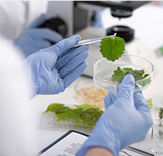
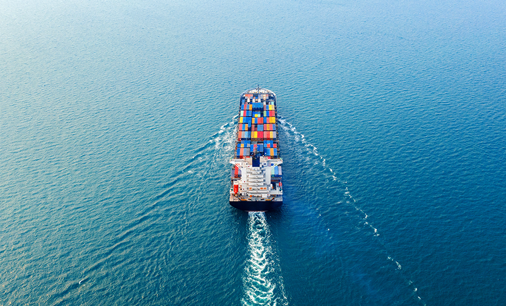

본문콘텐츠영역
thinKGreat
KG케미칼은 시대적 변화의 중심에 서서 변화를 선도하겠습니다.
-
VISION
고객가치를 최우선으로 생각하며
고객의 가치를 향상시킵니다.VISION
view more
-

R&D
사업다각화를 통하여 각 분야
최고의 회사가 되겠습니다.R&D
view more
-
연혁
1954년 국내 최초의 민간
비료회사 KG케미칼입니다.History
view more
BUSINESS
사업다각화를 통하여 각 분야 최고의 회사로 성장하기 위해 노력하고 있습니다.
-
생명농업사업
KG케미칼은 대한민국의 대표 비료선도기업입니다.
view more
앞으로도 친환경 비료개발에 앞장서는 기업이 되겠습니다.
KG케미칼의 비료사업부문은 농업인에게 고품질의
비료를 합리적인 가격으로 공급하고 있습니다.

미디어 센터
KG의 다양한 소식을 전합니다.
News
방송보도, 신문 및 잡지기사, 행사사진, 광고 등을 보실 수 있습니다.